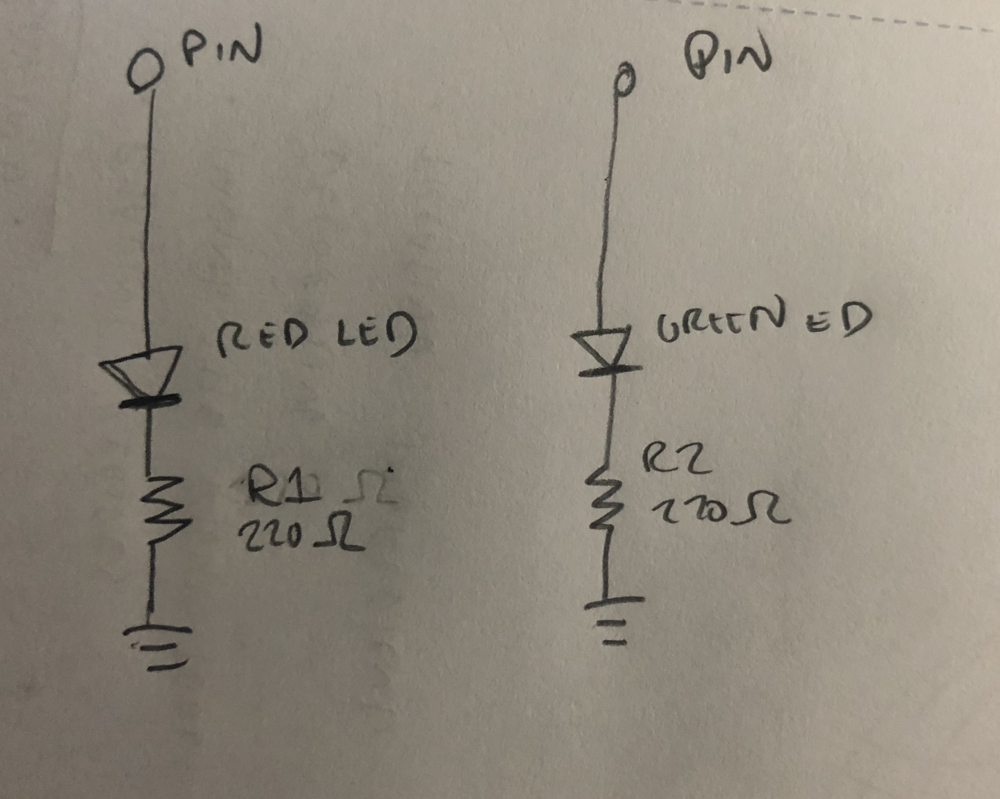

For my final project, I soldered two sets of LED's, one red and one green, with 220 Ohm resistor to a perf board. I also soldered wires on both sides of each circuit so that the perf board can be mounted somewhere on my final project and not limited to next to the Arduino or on a breadboard.
Below is the schema of the circuit.
